Deploying Apps to AKS with GitHub Actions and Container Assist (Alpha Preview)
Please Note This is an Alpha Preview feature. Behavior, prompts, and generated output may change between releases.
AI Notice Container Assist uses AI models to analyze project context and generate deployment files. Always review generated files before use, and do not include secrets or sensitive data in source files used for generation.
Technology Note This experience is built on Azure/containerization-assist, which combines AI generation with a specialized containerization toolchain and knowledge/policy guidance for Docker and Kubernetes workflows.
Container Assist is a feature-flagged workflow in the AKS VS Code extension that helps generate deployment assets for AKS directly from your project.
Problem this feature solves
Deploying an application to AKS with a GitHub Actions pipeline usually requires multiple manual steps:
- Creating and tuning a Dockerfile
- Authoring Kubernetes manifests for deployment and service resources
- Creating a CI/CD workflow for build, push, and deploy
- Wiring Azure authentication and repository workflow setup
This process is flexible, but often time-consuming and error-prone, especially when teams are setting up deployment automation for a new or existing project.
How this feature helps
Container Assist reduces setup friction by guiding you through:
- Repository analysis
- Dockerfile generation
- Kubernetes manifest generation
- Optional GitHub workflow generation
- Optional PR-ready Git staging flow
This gives teams a review-first starting point so they can iterate quickly while keeping full control over the final deployment configuration.
Why this is different from generic AI code generation
Container Assist is not a single free-form prompt that guesses deployment files from source code alone.
It uses a structured, workflow-driven approach based on containerization-assist capabilities:
- Repository-aware analysis first (
analyze-repo) to detect language, framework, and module shape - Knowledge-enhanced planning for Dockerfile and Kubernetes outputs
- Security and quality guidance in the tool flow (for example vulnerability and best-practice checks)
- Policy-driven extensibility so organization standards can shape recommendations
- Clear next-step/tool-chain guidance for staged execution from analysis to deployment verification
For AKS migration and onboarding scenarios, this helps teams move from app code to deployable AKS artifacts with better consistency and less manual trial-and-error.
Feature flag
Enable this preview feature in VS Code settings:
{
"aks.containerAssistEnabledPreview": true
}
Default value: false
This can also be enabled from the VS Code Settings UI.
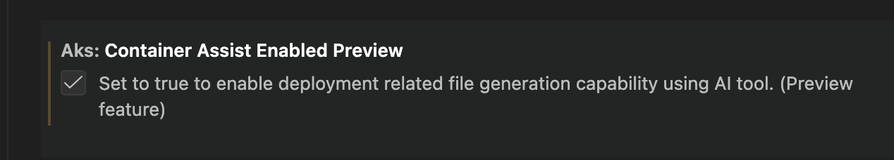
Where you can launch it
Container Assist can be launched from:
- Explorer folder context menu:
AKS: Deploy application to AKS (Preview) - AKS cluster context menu:
AKS: Run Container Assist (Preview)
The AKS cluster context menu entry is shown when:
aks.containerAssistEnabledPreviewistrue- At least one workspace folder is open
User flow and options
After launch, you can select one or both actions:
Generate Deployment FilesGenerate GitHub Workflow
If Generate Deployment Files is selected, the flow analyzes your project and generates:
Dockerfileat project root (or selected module path)- Kubernetes manifests under your configured manifests folder (default:
k8s)
If Generate GitHub Workflow is selected, workflow generation is configured for the selected AKS/Azure context.
If both actions are selected, deployment file generation runs first, then workflow generation.
GitHub integration story
When generated files are ready, the post-generation flow is designed for PR-friendly collaboration:
- OIDC setup prompt (when workflow is generated):
Setup OIDCSkip
- Review prompt:
Stage & ReviewOpen Files
- If you choose staging, files are staged and Source Control is focused with a suggested commit message.
- After commit, you are prompted to create a pull request.
- PR creation can run through the GitHub Pull Requests extension, with default branch and draft behavior from settings.
This supports a full path from local generation to reviewable GitHub PR with minimal manual glue steps.
Configuration reference
aks.containerAssistEnabledPreview
: Enable/disable the Container Assist preview entry points.
aks.containerAssist.k8sManifestFolder
: Folder name for generated Kubernetes manifests. Default: k8s.
aks.containerAssist.enableGitHubIntegration
: Enables Git/GitHub integration in the post-generation flow.
aks.containerAssist.promptForPullRequest
: Reserved setting for PR prompting behavior.
aks.containerAssist.prDefaultBranch
: Default base branch for PRs. Default: main.
aks.containerAssist.prCreateAsDraft
: Create PRs as draft by default. Default: true.
aks.containerAssist.modelFamily
: Default model family used by Container Assist. Default: gpt-5.2-codex.
aks.containerAssist.modelVendor
: Default model vendor used by Container Assist. Default: copilot.
Screenshots
Menu entry points
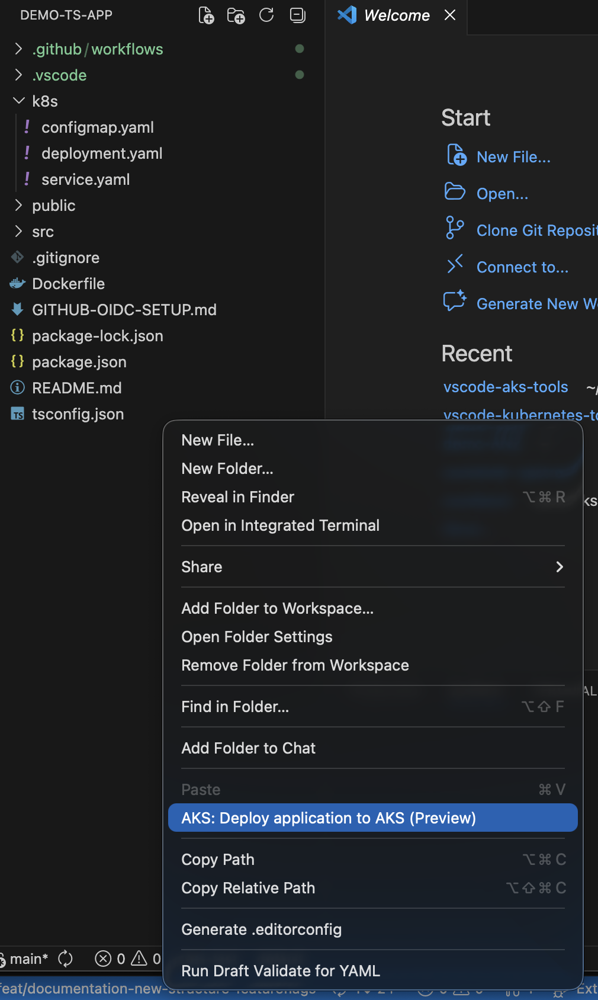
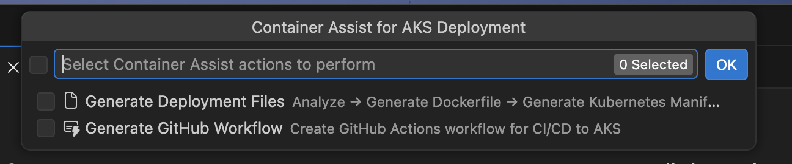
Container Assist and GitHub integration flow
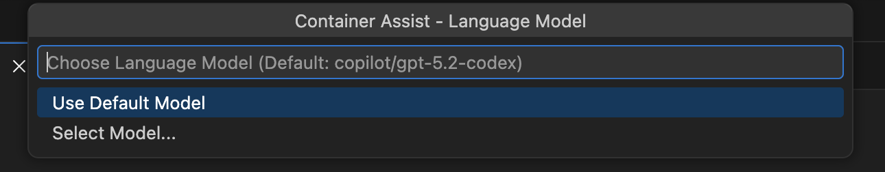
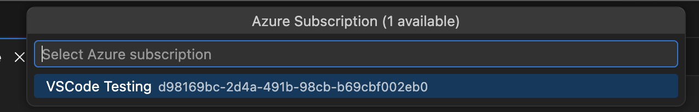
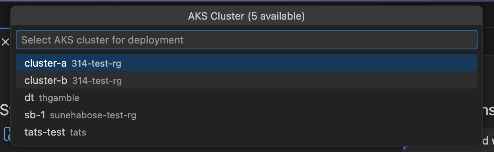
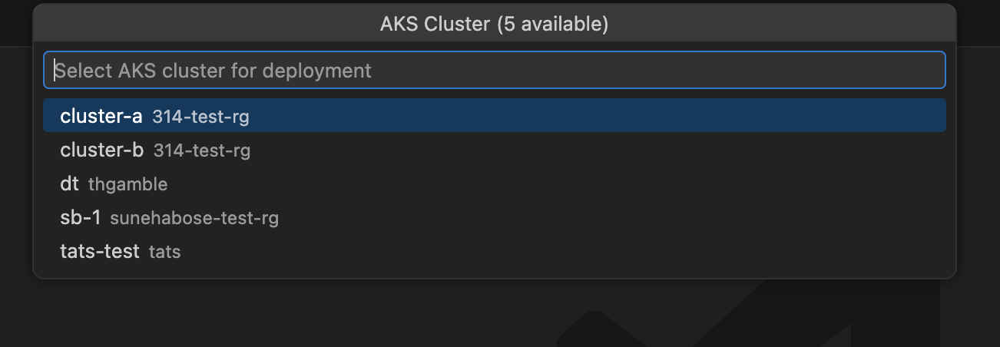
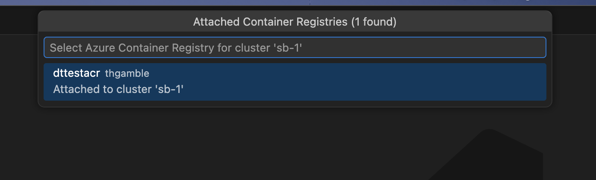
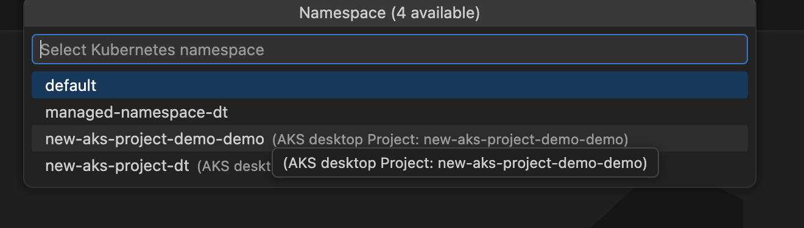
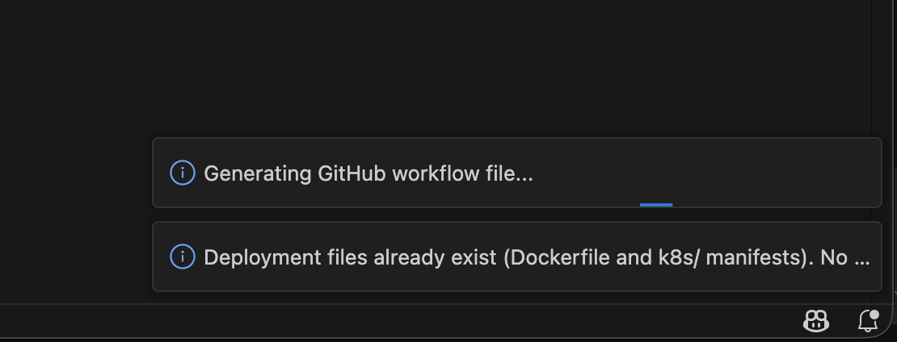
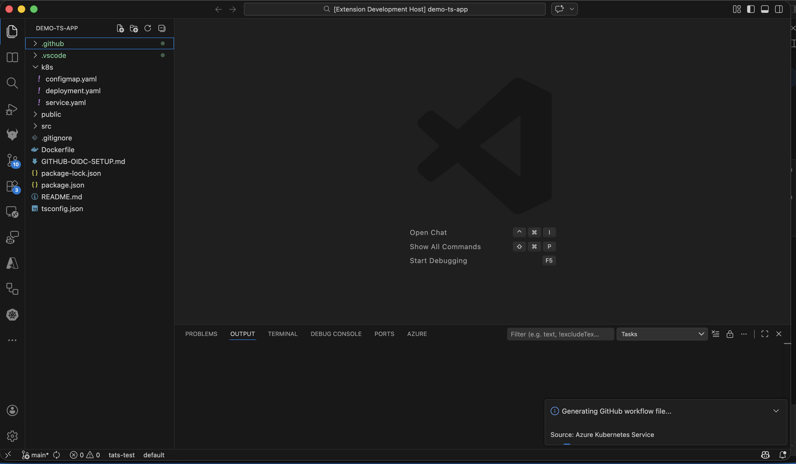
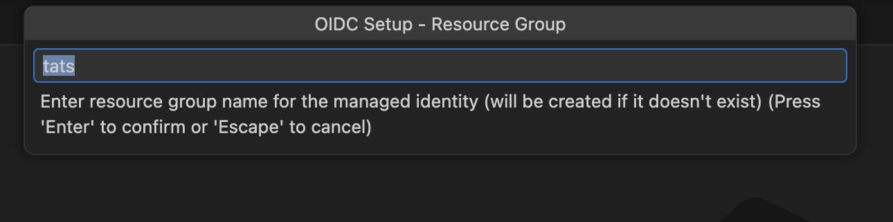
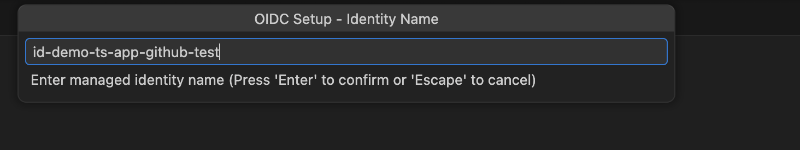
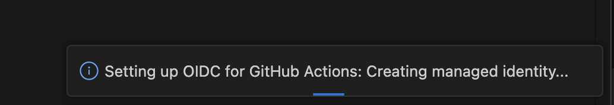
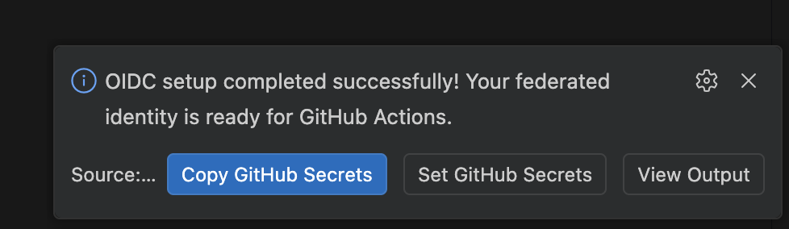
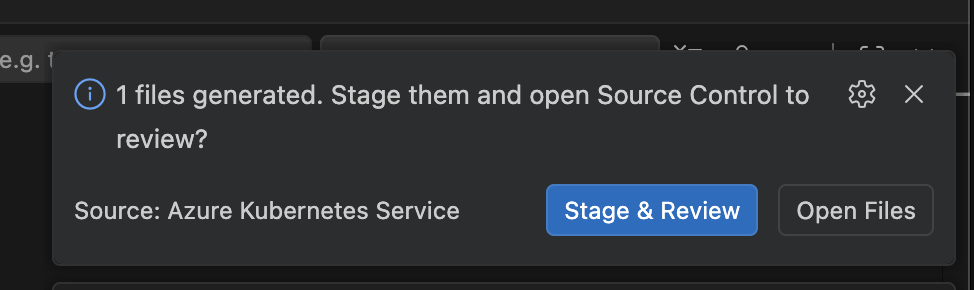
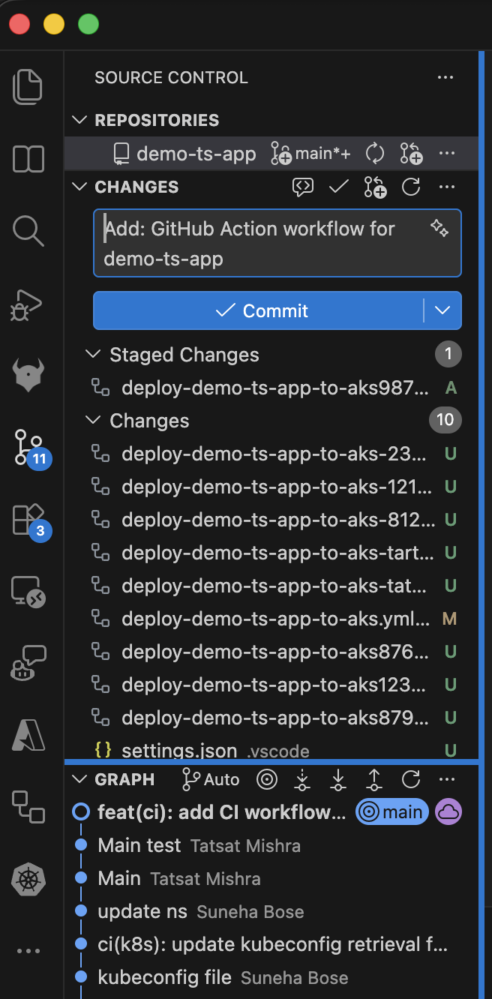